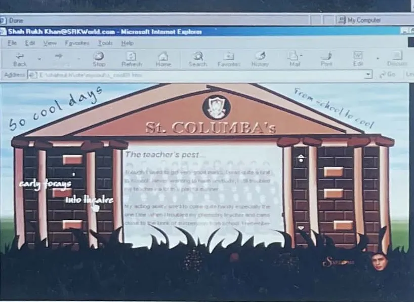

Chapter 2
From School To Cool · School, 1970 to 1985

SRKWorld.com, 2000: "From School To Cool", set at St. Columba's. (Archive: the author's collection)
At St. Columba's School he was good at everything: studies, hockey, football. He won the Sword of Honour, the school's highest award. A shoulder injury ended any hope of a career in sport. Fact
His father died of cancer in 1981. He was fifteen. Fact
The school. St. Columba's is a Christian Brothers' school in central Delhi. (Fact. Wikipedia) One of its teachers, Brother Eric D'Souza, became the first mentor of his life. On the television show Jeena Isi Ka Naam Hai, hosted by Farooq Sheikh, he called D'Souza the one person he looked up to after his parents, and the guiding light of his life. (Fact. The Week, 14 October 2024) He said the Brother kept his boys out of trouble by channelling their energy into football, hockey, the guitar and music. (Fact. The Week) Brother Eric D'Souza died in Goa on 13 October 2024, aged 74. (Fact. The Week)
The first stage. At school he acted in plays and was praised for his impressions of Dilip Kumar, Amitabh Bachchan and the actress Mumtaz. His childhood friend and acting partner was Amrita Singh, who became a film star before him. (Fact. Wikipedia) Sixteen years later his website still carried the memory: the musings page Just Like That had tabs named In School and Mumtaz. Archive: the author's collection; see Room · Just Like That An impressionist learns stars from the outside before he becomes one; he studies the walk, the voice and the pause. Interpretation
The award and the injury. The Sword of Honour is St. Columba's highest award, given to an all-rounder. He won it. (Fact. Wikipedia) [Unverified: the year of the award, from the school's records.] A shoulder injury ended his hopes of a career in sport. (Fact. Wikipedia) The body he had trained for the hockey field went, a few years later, into an army uniform on television (Chapter 4). Interpretation
1981. His father died of cancer in 1981, when the son was fifteen. (Fact. Wikipedia) The mother kept the family going. (Fact. The Siasat Daily, 22 June 2026) [Unverified: what she ran after 1981 and for how long; the Siasat report says she continued the business, without detail.]
1984. In 1984, in Delhi, he met Gauri Chhibber. (Fact. Wikipedia: Gauri Khan) She was a Punjabi Hindu; he was a Muslim with no film career and no father. Seven years later they married (Chapter 4). (Fact. Wikipedia: Gauri Khan; Interpretation)
From school to cool. The title is his, from the 2000 website. Archive: the author's collection It names the turn this chapter covers: the head boy with a sword and a hockey stick becomes the college student who lives in a rehearsal room. Interpretation He left school in 1985 for Hansraj College. (Fact. Wikipedia)